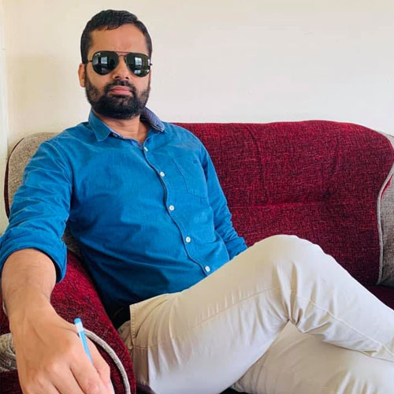

Badri Prasad Sharma is from Baglung District which lies under the Gandaki Province of Nepal. He was born in Thulakhet village of the then Tityang Village Development committee (VDC) ward no. 9 which currently falls under ward no. 9 of Baglung Municipality. He is the son of Mr. Ramchandra Sharma and Late Mrs. Ujjal Kumari Sharma. He is younger brother of two sisters namely Sitadevi Sharma and Saraswati Sharma. He is married with Anita Pangeni and has a son named Utkrishta Poudel.
He completed his Primary level education from Shivalaya Primary School situated at ward no. 9 of Tityang VDC. He then joined VIdhya Mandir High School situated at Baglung Bazaar, the District Headquater; for grade 6. He Shifted to Dhawalagiri Boarding School situated at Baglung Bazaar from where he completed School Leaving Certificate Level (SLC) in 1994 A.D. He completed Diploma in Civil Engineering (DCE, 1994 A.D to 1997 A.D) form Institute of Engineering (IoE), Western Region Campus (WRC), Pokhara which is currently Headquater of Gandaki Province. He completed Bachelor in Civil Engineering (BCE, 2000 A.D. to 2004 A.D.) from Advanced college of Engineering and Management (ACEM) which is situated at Lalitpur Metropolitan City and is affiliated to IoE , Tribhuwan University (TU). He completed Master of Science (M.Sc., 2004 A.D. to 2008 A.D.) in Civil Engineering (Water Resources) from Pulchowk Campus, IoE, TU.
He started job as an Overseer (1997 A.D. to 2000 A.D.) after completing DCE; at Rural Infrastructure Development Project (RIDP), District Implementation Unit (DIU), Baglung District; under the Department of Local Infrastructure Development and Local Roads (DolIDAR), Ministry of Local Development (MoLD), the then His Majesty’s Government (HMG).
He was a Lecturer at ACEM (2004 A.D. to 2007 A.D.) after completing BCE. He was also a part time Lecturer in Thapathali Engineering Campus, IoE in 2014 A.D.
In 2007 A.D. he joined as an Engineer at Department of Roads (DoR) under Ministry of Physical Infrastructure of Transport (MoPIT) of Government of Nepal (GoN). He was Promoted to Senior Divisional Engineer (SDE) in 2016 A.D. and is currently working in different Government Road and Bridge Projects under DoR.
He has been involved and conducted various Trainings and workshops as a trainee and Trainer; related to Planning, Survey, Design, Estimate, Procurement, Construction and monitoring of different Development Projects like Roads and Bridges.
He has been involved and conducted various Trainings and workshops as a trainee and Trainer; related to Planning, Survey, Design, Estimate, Procurement, Construction and monitoring of different Development Projects like Roads and Bridges.

Badri Prasad Sharma
Engineer
Photo Gallery
